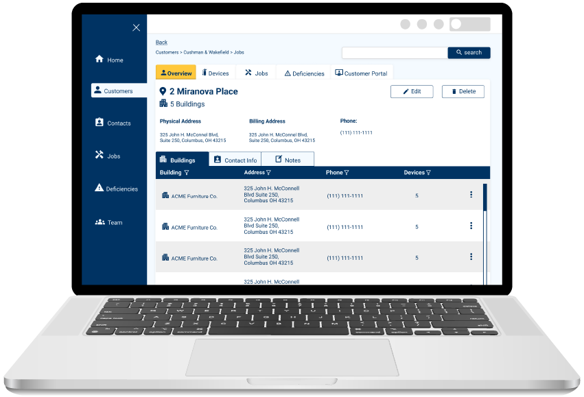
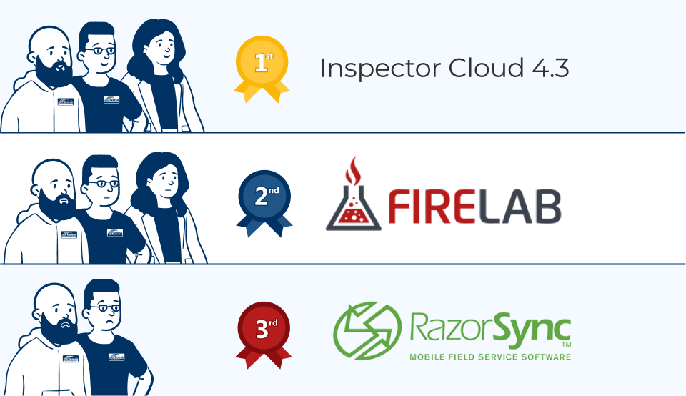
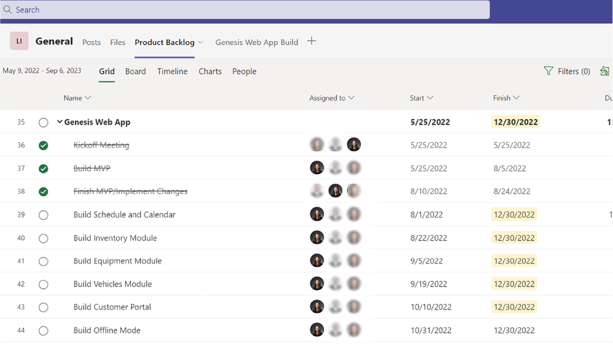

UX Design | Project Management
I designed an intuitive cloud-based inspection platform for Genesis Building Systems, streamlining their outdated systems and fire safety device inspection processes.
This resulted in a modernized system, reducing costs by $10,320 per year.
The current systems in place were outdated and fragmented, wasting money and creating an inefficent inspection process.
Migrate the company's current data into an upgraded, cloud-based platform in order to optimize inspection reports, track employee progress, and manage customer data.
Our system helped Genesis Building Systems reduce costs by $10,320 per year.
Competitive Analysis, Personas, User Interviews, Usability Testing, Wireframes
Figma, Excel, Teams, Syncfusion component library, FontForge
Lead UX Designer (Research, UI Design, Project Management)
My team discovered that Genesis Building Systems was using not one, but three different systems—Inspector Cloud 4.3, Razor Sync, and Firelab. This prompted a strategic shift, leading us to conduct a comprehensive competitive analysis to identify strengths and weaknesses in each system. To ensure our analysis aligned seamlessly with Genesis Building Systems' diverse user base we worked closely with Genesis to establish three primary user personas based on our competitive analysis—Tim Tech, Billy Boss, and Annie Admin. Recognizing the future consideration of a customer portal feature, we also identified an additional user persona, Carol Customer, to be incorporated in the next year. This client engagement allowed us to tailor our design and development approach to meet the immediate needs of these key users while strategically planning for the future expansion of the CRM system.

Inspection Technician

CEO

Admin Assistant

Inspector Cloud 4.3 (Legacy software)
Firelab (Implemented in the past three years)
RazorSync (Implemented in the last two years)
The primary hurdle in our planning process revolved around determining prioritization. Our initial emphasis was on addressing the requirements of Tim Technician and Billy Boss, aiming to equip Annie Admin with essential customer and inspection data for the subsequent implementation of quoting features.Recognizing the importance of expediting the customer data feature and the inspection flow, we established an MVP approach for these top priorities.

Inconsistencies in language across the legacy applications prompted us to redefine job categories—Inspections, Work Orders, and Solutions jobs. This strategic shift aimed to bring clarity and uniformity to the inspection workflow.

Recognizing the importance of a well-defined deficiencies tab, we had one of the technicians walk us through the process of marking something as a deficiency. Multiple storyboards were created to represent various scenarios, ensuring a comprehensive and intuitive solution.
**Storyboard illustrations were created using Adobe Firefly.

During the design and branding of Inspector Cloud 5.0, a pivotal aspect was the integration of elements from the established Genesis Building Systems brand. However, a significant challenge emerged as the company lacked defined branding guidelines. To overcome this, our team meticulously adopted the colors, typography, and overall aesthetic from their existing website, ensuring a cohesive and aligned visual identity. Leveraging efficiency and consistency, we opted for a pre-built component library to establish the look and feel of the application, streamlining the design process and maintaining brand coherence throughout Inspector Cloud 5.0.
Understanding that 95% of the color-blind community is male, and considering the predominant male user base, we conducted extensive color testing to guarantee our branding guidelines catered to users in this category. Our approach not only addressed inclusivity, but also focused on minimizing visual load. To achieve this, we deliberately opted for a straightforward color guide, incorporating only two primary colors and a single color for the call-to-action (CTA).
We relied on the Blazor Syncfusion component library for the majority of the User Interface. Despite its extensive features, we encountered a shortage of specific icons essential for our application. To address this gap, I took the initiative to design a custom icon font. Utilizing Figma and FontForge, we seamlessly integrated this personalized icon set across the application, ensuring a cohesive and tailored visual experience.


Many iterations resulted in a streamlined, cloud-based application that significantly increased business productivity for Genesis Building Systems. The unified platform now allows for efficient management of customer accounts, contacts, and inspections.


Our design journey kicked off with a concentrated effort on shaping the Customer tab, this unfolded through collaboration with key users—Billy Boss and Tim Technician. While delving into consultations with these users, insights emerged, revealing the necessity for adaptations to the original database structure inherited from Inspector Cloud 4.3, the legacy software. These early revelations prompted a thoughtful reassessment, ultimately laying the foundation for establishing a standardized language for categorizing customer account types.
We determined that a customer would serve as the top-level category for an account. This hierarchical structure allowed for the inclusion of multiple location sites and buildings within each customer account, fostering a comprehensive and intuitive organizational framework.

Recognizing the dynamic nature of contact data, where individuals might transition between customer accounts, we prioritized flexibility in our design. This approach ensured that the system could seamlessly accommodate scenarios where a contact needed to change associations from one customer to another, or, where a contact may belong to more than one customer account.
In response to the specific needs of Billy Boss and Annie Admin, who required quick access to an overview of all contacts, we implemented a dedicated contact table. This table provided a concise and organized view of contact data, allowing for efficient tracking and management of contacts across various customer accounts.

In crafting the Jobs tab, we focused on incorporating a schedule view that showcased all ongoing jobs ("current" was the language the users agreed upon)—a feature highly favored by those transitioning from RazorSync.
This central hub served as the go-to location for initiating inspection reports by selecting "Start Job". Users found convenience in using the "Add Job" call-to-action to seamlessly integrate small work orders while on-site, streamlining their workflow and enhancing overall efficiency.
If a device was marked "fail" during a job, the report would automatically add it to the deficiencies tab where it could be archived, assigned to a quote, or auto-approved and fixed in the same day.
The Deficiencies tab emerged as a vital component post-job completion, housing a comprehensive overview of all identified issues or failed aspects. Enabling users to add deficiencies across different reports ensured that a deficiency wasn't tied to a specific inspection, promoting a more flexible and comprehensive approach.
The "Assign Quote" option proved invaluable, allowing users to seamlessly transition a deficiency to the Quotes tab, whether awaiting manual approval or facilitating an auto-approval.
Additionally, the "See Report" button provided quick access to the original inspection report, allowing users to review notes and contextual information related to the identified deficiency, further optimizing the inspection workflow.


In crafting the Jobs tab, we focused on incorporating a schedule view that showcased all ongoing jobs ("current" was the language the users agreed upon)—a feature highly favored by those transitioning from RazorSync.
This central hub served as the go-to location for initiating inspection reports by selecting "Start Job". Users found convenience in using the "Add Job" call-to-action to seamlessly integrate small work orders while on-site, streamlining their workflow and enhancing overall efficiency.
If a device was marked "fail" during a job, the report would automatically add it to the deficiencies tab where it could be archived, assigned to a quote, or auto-approved and fixed in the same day.
This project has been a personal growth journey for me as a UX designer! Adopting a robust component library brought both consistency and scalability, enhancing the overall project impact. Regular user conversations guided my understanding of evolving needs, and the iterative design process, shaped by continuous feedback, emphasized adaptability. Collaborating with a full-stack developer underscored the importance of teamwork in bringing a holistic vision to life. This experience has been a valuable lesson in the dynamic interplay of design and development, marking a significant step forward in my journey as a designer.